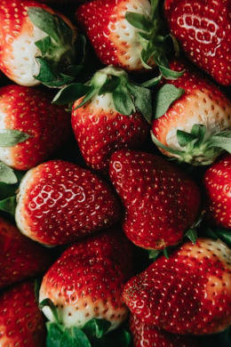

Página Vermelha
Seja Bem-Vindo à sua primeira cor: Vermelho!
Em todas as cores/etapas, irei falar alguns conhecimentos gerais e curiosidades relacionadas à cor da página
(tinha que dificultar um pouco o processso)
Curiosidades - Vermelho
- A cor vermelha é uma cor primária (das 3 RGB);
- Seu pigmento pode ser facilmente extraído de plantas (como o Urucum) ou de animais;
- A cor vermelha é uma cor quente, assim como suas derivadas (laranja, vinho, e alguns tons de roxo avermelhado);

- No campo da física óptica, a cor vermelha possui maiores ondas (amplitude), o que a torna geralmente como a primeira cor a ser percebida em um ambiente;
- No Marketing e Design, a cor vermelha é comumente associada ao Amor, emoção, raiva, perigo e sensação de urgência;
- Cerca de 12% das pessoas elegem o vermelho como cor favorita; e 4% a consideram como a cor que menos gostam.
Pronto para seguir?
O jogo começa agora! Escolha um dos links para continuar. Mas agora... Por onde seguir? Por aqui ou por ali? 50% de chance!